输入与响应图
红色叠加区域是梁筋/宽强结构掩膜，只用于最终绑扎点排除，不删除整条钢筋线。
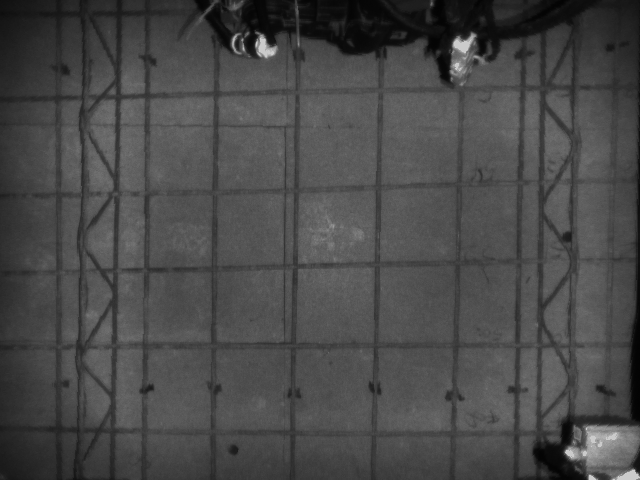
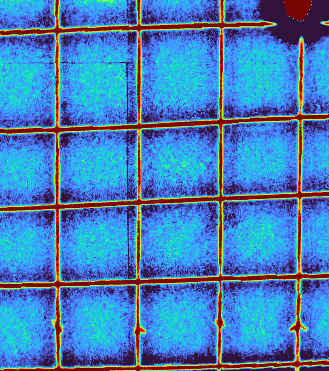
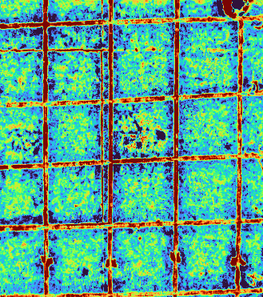
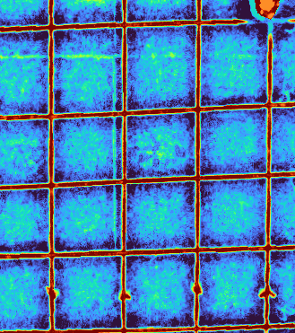
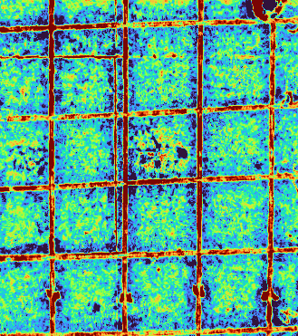
01 当前主链：theta/rho 直线族
32 points当前 active PR-FPRG 输出，保持 spacing_pruned 后的两组直线族。
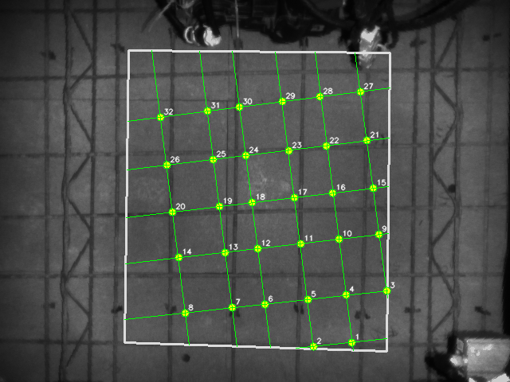
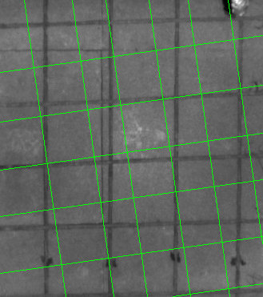
{"beam_filtered_point_count": 0, "curve_metrics": {}}
[{"angle_deg": 82.0, "rhos": [-282.5, -232.33, -184.61, -130.71, -89.47, -30.05], "line_count": 6, "curve_coverage": null}, {"angle_deg": 172.0, "rhos": [-396.5, -337.52, -267.81, -210.04, -150.48, -88.85], "line_count": 6, "curve_coverage": null}]
02 归档方案：红外最终 rho 微调
21 points只做每条线的全局 rho 平移，复现已归档的红外贴线思路，便于对比。
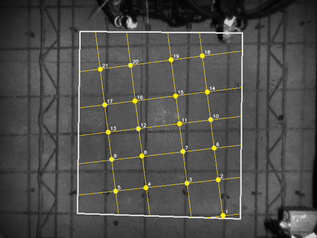
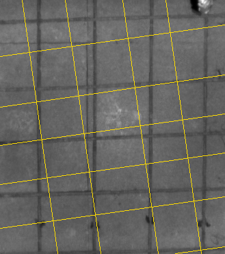
{"beam_filtered_point_count": 0, "curve_metrics": {}}
[{"angle_deg": 82.0, "rhos": [-240.0, -177.0, -94.0, -32.0], "line_count": 4, "curve_coverage": null}, {"angle_deg": 172.0, "rhos": [-402.0, -330.0, -266.0, -210.0, -154.0, -81.0], "line_count": 6, "curve_coverage": null}]
03 局部 ridge 贪心曲线
31 points以当前 theta/rho 为拓扑骨架，每个采样点沿法线独立找局部响应中心。
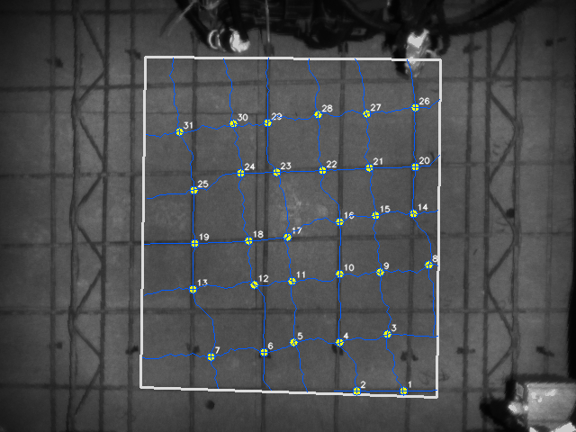
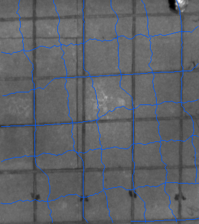
{"beam_filtered_point_count": 0, "curve_metrics": {"coverage_mean": 0.977, "score_mean": 0.563, "abs_offset_mean": 3.43, "abs_offset_p95": 8.8, "wiggle_mean": 1.148}}
[{"angle_deg": 82.0, "rhos": [-282.5, -232.33, -184.61, -130.71, -89.47, -30.05], "line_count": 6, "curve_coverage": 0.953}, {"angle_deg": 172.0, "rhos": [-396.5, -337.52, -267.81, -210.04, -150.48, -88.85], "line_count": 6, "curve_coverage": 1.0}]
04 最小代价路径曲线
31 points仍沿法线找 ridge，但用动态规划约束相邻采样点偏移连续。
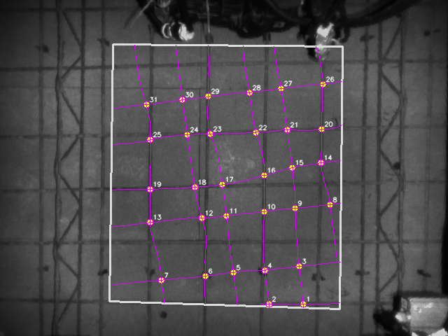
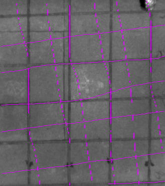
{"beam_filtered_point_count": 0, "curve_metrics": {"coverage_mean": 0.868, "score_mean": 0.512, "abs_offset_mean": 4.378, "abs_offset_p95": 9.0, "wiggle_mean": 0.061}}
[{"angle_deg": 82.0, "rhos": [-282.5, -232.33, -184.61, -130.71, -89.47, -30.05], "line_count": 6, "curve_coverage": 0.829}, {"angle_deg": 172.0, "rhos": [-396.5, -337.52, -267.81, -210.04, -150.48, -88.85], "line_count": 6, "curve_coverage": 0.908}]
05 ridge 约束曲线
32 points动态规划分数加入“中间强、两侧弱”的局部 ridge 判断。
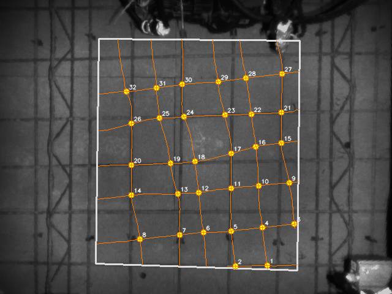
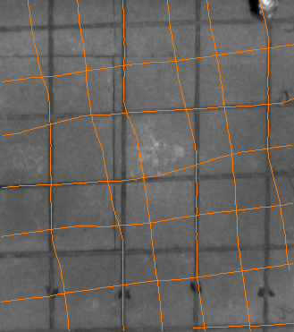
{"beam_filtered_point_count": 0, "curve_metrics": {"coverage_mean": 0.863, "score_mean": 0.509, "abs_offset_mean": 3.699, "abs_offset_p95": 8.8, "wiggle_mean": 0.067}}
[{"angle_deg": 82.0, "rhos": [-282.5, -232.33, -184.61, -130.71, -89.47, -30.05], "line_count": 6, "curve_coverage": 0.829}, {"angle_deg": 172.0, "rhos": [-396.5, -337.52, -267.81, -210.04, -150.48, -88.85], "line_count": 6, "curve_coverage": 0.898}]
06 红外辅助曲线
32 points深度响应为主，叠加红外暗线响应，只作为后续改进候选。
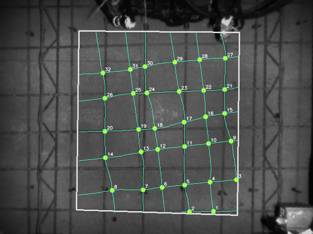
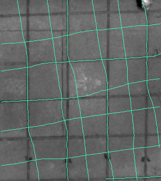
{"beam_filtered_point_count": 0, "curve_metrics": {"coverage_mean": 0.867, "score_mean": 0.523, "abs_offset_mean": 4.086, "abs_offset_p95": 8.8, "wiggle_mean": 0.067}}
[{"angle_deg": 82.0, "rhos": [-282.5, -232.33, -184.61, -130.71, -89.47, -30.05], "line_count": 6, "curve_coverage": 0.831}, {"angle_deg": 172.0, "rhos": [-396.5, -337.52, -267.81, -210.04, -150.48, -88.85], "line_count": 6, "curve_coverage": 0.904}]